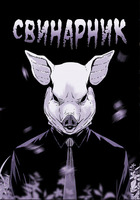

Твоя задротская душа
Не любит всех — только себя.
Ты шлёшь семью и мир вокруг,
И без друзей твой ближний круг.
Но как бывает иногда,
Лишь потеряв всё навсегда,
Решил ты небо не коптить
И суицид взять совершить.
Но мир на блажь твою плевал
И кучу ужасов наслал.
Теперь придётся как-то жить...
Ну и всех монстров победить?
Узнать больше...
X
Милый дом
Тип: Манхва
Год релиза: 2017
Статус тайтла: Завершён
Автор: Carnby
Возрастной рейтинг: 16+
Глав: 141
x

Расслабляющий отдых в раю или смертельная ловушка? Главный герой просыпается на захватывающем дух пляже, но понятия не имеет, кто он и как сюда попал. Как бы он ни пытался собрать всё воедино, распутать эту головокружительную тайну будет нелегко, когда каждая подсказка ведёт к ещё более безумным вопросам... и семья, которая приветствует его в своем доме, не такая, какой кажется.
Узнать больше...
X
Свинарник
Тип: Манхва
Год релиза: 2019
Статус тайтла: Завершён
Автор: Carnby
Возрастной рейтинг: 18+
Глав: 68
x

Джин Сон нигде не может найти утешения. В школе над ним безжалостно издеваются из-за его замкнутого характера и слабого здоровья. Однако не это является источником непреодолимого ужаса Джина: то, что он боится больше всего, — это его собственный отец.
Для большинства отец Джина — отзывчивый человек, успешный бизнесмен и любящий родитель. Но это только видимость. Правда в том, что он — сумасшедший серийный убийца, а Джин — его невольный соучастник. В течение многих лет Джину приходилось, вводя в заблуждение полицию, помогать отцу. Однако, когда его отец начинает проявлять интерес к ученице по обмену Кён Юн, Джин должен принять решение — быть трусом, который отправит её на виселицу, как всех остальных, или станет ублюдком, который бросит вызов своему отцу.
Узнать больше...
X
Сволочь
Тип: Манхва
Год релиза: 2014
Статус тайтла: Завершён
Автор: Carnby
Возрастной рейтинг: 16+
Глав:94
x

Быть неудачником — клеймо,
И дали б чёртово ружьё,
Ты б застрелил всех подлецов,
Всех мразей, трусов, гордецов...
Но ты — слабак, а ночь темна
И монстрами окружена.
И в руки получив ружьё,
В кого направишь ты его?.. (с)RSC
Узнать больше...
X
Мальчик с ружьём
Тип: Манхва
Год релиза: 2021
Статус тайтла: Завершён
Автор: Carnby
Возрастной рейтинг: 16+
Глав: 69
x
{kind=link}